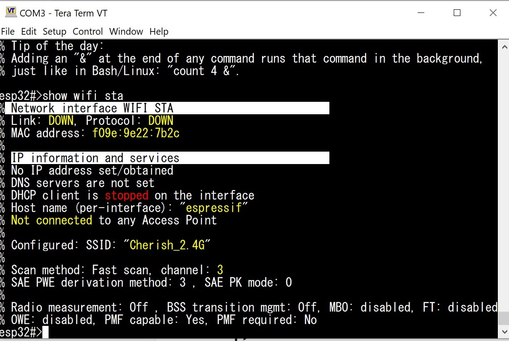
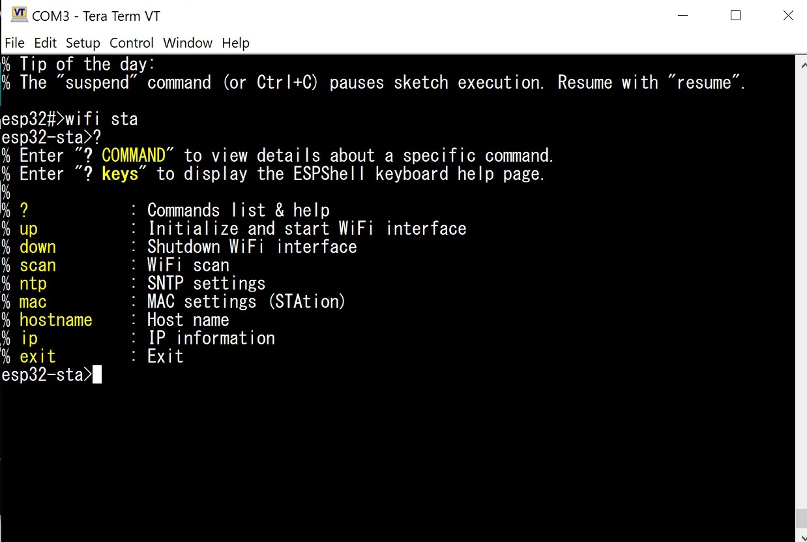
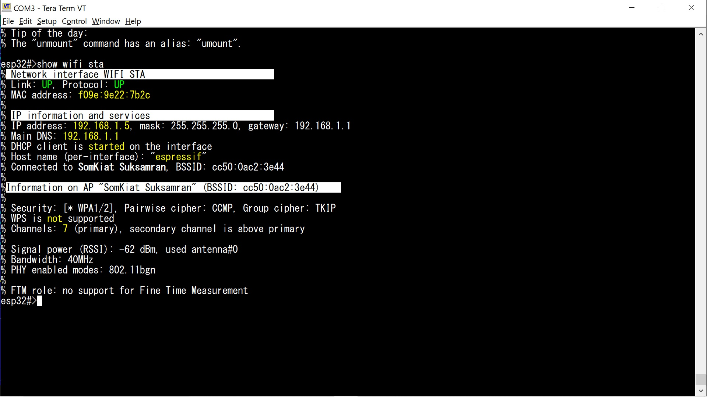
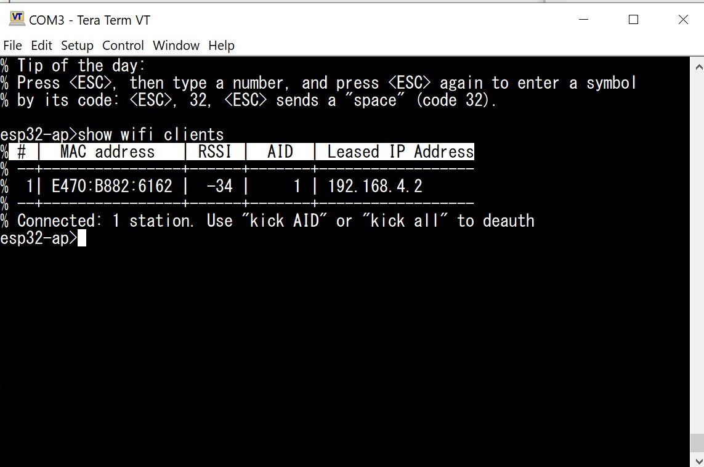

Большинство чипов Espressif оснащены встроенным модулем WiFi. Этот модуль разработан сторонними специалистами, поэтому значительная часть исходного кода, связанного с драйвером WiFi, недоступна. Вместо исходников поставляются только скомпилированные библиотеки и заголовочные файлы. При инициализации WiFi происходит загрузка микрокода во внутренний FPGA, который реализует всю функциональность беспроводного интерфейса.
Некоторые микроконтроллеры Espressif не имеют встроенной поддержки WiFi, а, например, ESP32-P4 использует конфигурацию с двумя MCU, где один из них выполняет роль WiFi-модуля (сам ESP32-P4 встроенного WiFi не имеет). Внимание: ESPShell поддерживает работу лишь с чипами, у которых WiFi встроен аппаратно (например ESP32, ESP32-S3, ESP32C6).
Пользовательские скетчи Arduino обычно используют «стандартную» библиотеку WiFi для ESP32, которая представляет собой обертку для ESP-IDF API. ESPShell не конфликтует с такими скетчами, т.к. хоть ничего и не знает про WiFi Library, но пользуется тем же самым API и не хранит указателей на интерфейсы или их настройки: если WiFi был инициализирован в коде скетча, шелл корректно взаимодействует с уже работающим интерфейсом. Более того, один из основных сценариев использования ESPShell — это возможность менять сетевые настройки на лету: переопределять IP-адреса, пароли и имена сетей прямо во время работы пользовательского приложения. Если же пользовательский скетч ничего не знает про WiFi и его инициализацию, но хочет использовать BSD sockets API, то можно вручную сконфигурировать сетевые подключения и продолжить выполнение скетча (прервать скетч можно нажав Ctrl+C, а продолжить его выполнение - командой "resume").
ESPShell поддерживает два сетевых WiFi-интерфейса: один называется sta (Station) а другой - ap (Access Point). Интерфейс sta используется для подключения к существующей сети (например, для доступа в интернет), а ap — для создания собственной точки доступа. Оба интерфейса можно использовать одновременно, что позволяет, например, организовать маршрутизацию и трансляцию адресов — так ESP32 может работать в режиме WiFi-удлинителя.
Как и в случае с другими интерфейсами ESP32, работа с WiFi начинается с перехода в нужный режим. Для этого выполните команду wifi sta или wifi ap:
esp32#>wifi sta esp32-sta>
esp32#>wifi ap esp32-ap>
Чтобы выйти из режима конфигурации WiFi, используйте команду exit (или нажмите Ctrl+Z).
Внимание: для того, чтобы была возможность просматривать настройки wifi (командой "show wifi ...") интерфейсы должны быть созданы: это делает либо скетч (вызвав WiFi.begin(...)), либо пользователь, вручную, выполнив любую команду, начинающуюся с "wifi" (например "wifi sta")Для просмотра состояния и параметров WiFi-интерфейса используется команда show wifi с нужным параметром:
esp32#>show wifi ap ← информация об интерфейсе AP esp32#>show wifi sta ← информация об интерфейсе STA esp32#>show wifi clients ← информация о клиентах (STA) на нашей точке доступаНиже показан пример вывода команды show wifi sta при отсутствии соединения. Строка «Configured:» отображает информацию, считанную из flash-памяти (если она была туда сохранена ранее командой wifi storage flash).

Рис. 1: Вывод команды show wifi sta (соединение не установлено)
Сканирование применяется для получения списка доступных сетей, а так же - параметров той или иной точки доступа.
ESP32 поддерживает два режима сканирования: активное (команда scan) и пассивное (команда scan passive). При активном сканировании в эфир отправляются WiFi Probe Request, и это режим по умолчанию — команда scan без параметров выполняет именно активное сканирование. Если добавить аргумент passive, ESPShell выполнит пассивное сканирование: никаких пакетов в эфир не отправляется, устройство просто «слушает» эфир и собирает информацию о найденных точках доступа.
esp32#>scan passive
Если передать команде scan аргумент bssid и MAC-адрес точки доступа (отображается в выводе команды scan в колонке BSSID), можно получить расширенную информацию о конкретной сети:
esp32-ap>scan bssid CC50:0AC2:3E44 % Starting active WiFi scan (obtaining details for the BSSID)... %Information on AP "SomKiat Suksamran" (BSSID: CC50:0AC2:3E44) % % Security: [* WPA1/2], Pairwise cipher: TKIP_CCMP, Group cipher: TKIP % WPS is not supported % Channels: 7 (primary), secondary channel is above primary % % Signal power (RSSI): -60 dBm, used antenna#0 % Bandwidth: 40MHz % PHY enabled modes: 802.11bgn % % FTM role: no support for Fine Time Measurement % Scanning took 3.43 seconds esp32-ap>Команда сканирования доступна для обоих интерфейсов (т.е. может быть выполнена в любом из конфигурационных режимов - STA, AP, AP+STA)
При конфигурировании WiFi есть возможность запустить NTP-клиента, который будет переодически синхъронизировать время с удаленным сервером. Адреса NTP серверов по умолчанию получаются от DHCP сервера. Если получить адреса NTP серверов от DHCP не удалось, то будут использованы статические сервера time.windows.com и pool.ntp.org. Если получить адрес NTP сервера по DHCP удалось, то в добавление к адресу полученному от DHCP сервера, так же будут добавлены два статическиъ сервера (time.windows.com и pool.ntp.org).
Можно сконфигурировать только статические адреса NTP серверов. В таком случае предложение от DHCP сервера будет проигнорировано. Данная версия поддерживает до трех NTP серверов: один может быть поолучен от DHCP сервера а два других (или все три!) могут быть сконфигурированы статически.
По умолчанию NTP клиент остановлен и для его запуска надо выполнить команду "ntp enable" на одном из WiFi интерфейсов. Команда "ntp" может обрабатывать последовательность аргументов: вместо
esp32-sta>ntp dhcp esp32-sta>ntp enableможно написать:
esp32-sta>ntp dhcp enableДля того, чтобы получать адреса NTP от DHCP нужно выполнить команду "ntp dhcp". Для того, чтобы использовать свои адреса NTP нужно выполнить команду "ntp pool.ntp.org": имя сервера приведено для примера. Вместо имен серверов можно использовать IP адреса
Пример: задаем три статических сервера, предварительно остановив сервис esp32-sta>ntp disable 1.1.1.1 time.windows.com 2.2.2.2Для того, чтобы задать и DHCP сервера и статические вместе, следует использовать такой синтаксис команды:
Пример: задаем 2 статических сервера, и один по DHCP esp32-sta>ntp 1.1.1.1 time.windows.com dhcpОбратите внимание, что для случая со смешанными серверами NTP, ключевое слово "dhcp" в команде "ntp" ставится ПОСЛЕ статических адресов! Если же сделать наоборот, то есть написать что-то вроде "ntp dhcp 1.1.1.1", то ключевое слово dhcp будет проигнорировано.
esp32-sta>ntp 1.1.1.1 time.windows.com dhcp ← правильное задание статических и динамических серверов esp32-sta>ntp dhcp 1.1.1.1 time.windows.com ← "dhcp" будет проигнорировано!
Если соединение WiFi установлено, IP адрес получен и NTP серверы сконфигурированы, то через несколько секунд появится сообщение о том, что время синхзронизировано. Удостовериться в этом можно командой "show time"
Прежде чем переходить к подробному описанию команд, попробуем подключиться к одной из доступных точек доступа. Для этого войдём в режим конфигурации WiFi-станции (STA):
esp32#>wifi sta esp32-sta>В этом режиме становятся доступны команды для настройки параметров WiFi-станции — имени сети, пароля, IP- и MAC-адресов, маски сети, DNS-серверов и прочего. Полный список команд можно увидеть, выполнив ? (знак вопроса):

Рис. 2: Список доступных команд в режиме STA
Чтобы просмотреть список доступных WiFi-сетей и их характеристики, используйте команду scan. Она выполняет сканирование (активное или пассивное, в зависимости от параметра) и выводит найденные сети:
esp32-sta>scan
% Starting active WiFi scan (obtaining a list of available networks)...
% # |Ch| Network Name (SSID) | AP MAC (BSSID) | RSSI | Security
% --+--+---------------------------------+----------------+------+--------------
% 1 | 7| SomKiat Suksamran | CC50:0AC2:3E44 | -60 | * WPA1/2
% 2 |13| TECNO SPARK 20 Pro | 623A:D9D7:FCD9 | -62 | * WPA2
% 3 | 3| Cherish_2.4G | E4FA:C45F:DCFF | -63 | * WPA2
% 4 | 1| ORNSHOUSE_2.4GHz | 3E93:F42D:9DEC | -76 | * WPA1/2
% 5 | 5| hidden | 6420:E063:B383 | -84 | * WPA2
% 6 |13| hidden | 6420:E387:C756 | -86 | * WPA2
% 7 |13| Nonginin_2.4G | 6620:E317:C756 | -86 | * WPA2
% 8 | 1| ORNSHOUSE_2.4GHz | CA9F:1A90:1F30 | -91 | * WPA1/2
% 9 |11| VR CHINA EXPRSS | 6CA5:D11F:99B5 | -91 | * WPA1/2
% 10| 9| hidden | 9CA2:F401:A666 | -92 | * WPA2
% 11| 4| hidden | 6420:E386:23FE | -93 | * WPA2
% 12| 4| TrueGigatexFiber_2.4G_3FA | 6620:E316:23FE | -93 | * WPA2
% 13| 9| GWF @aonang | 9EA2:F421:A666 | -93 | * WPA2
% 14|11| Get Well Fitness@aonang | 9056:DE3F:0A06 | -93 | * WPA1/2
% 15| 7| Eud Service_2.4 | F4E8:4F4E:66F0 | -94 | * WPA1/2
%
% Total: 15 access points
%
% Legend ("security" column):
%"*" : PSK (Preshared key)
%"+" : PSK (Preshared key, mixed mode)
%"$" : ENT (Enterprise security)
%"-" : OPEN (Open access)
% Scanning took 3.63 seconds
esp32-sta>
Выберем сеть «SomKiat Suksamran» и подключимся к ней с паролем Klong1414.
Обратите внимание, что имя сети записано в кавычках — это необходимо, если в SSID есть пробелы. Без кавычек шелл воспримет каждое слово как отдельный аргумент команды.
Как и в других интерфейсах ESPShell (например, UART или I2C), интерфейс активируется командой up.
У неё несколько параметров: первый — имя или MAC-адрес точки доступа, второй — пароль (если он есть), третий — auto-reconnect, включающий автоматическое восстановление соединения при обрыве.
esp32-sta>up "SomKiat Suksamran" Klong1414 auto % Connect to a network using SSID % Auto-reconnect enabled % WIFI STA: Connected to the network. Configuring IP.. % Interface WIFI STA got IP 192.168.1.5, mask 255.255.255.0, gw 192.168.1.1 (changed) % WIFI STA: propagating DNS servers to the AP interface..Команда up выполняется асинхронно — процесс подключения идёт в фоне. О факте установления соединения можно узнать по сообщениям шелла или командой show wifi sta.

Рис. 3: Вывод команды show wifi sta — соединение установлено
Просто? Довольно просто. Теперь - к подробностям.
Работа со STA-интерфейсом начинается с команды wifi sta. Рекомендуется выполнять настройку интерфейса до подключения к сети — особенно если вы планируете использовать статический IP-адрес. Изменить IP можно и после подключения, но это приведёт к переподключению.
| Команда | Описание |
|---|---|
ip |
ip address ADDRESS/PREFIX | dhcp [dns ADDRESS | gw ADDRESS]* Задаёт статический или динамический IP-адрес, маску сети, шлюз по умолчанию и DNS-серверы. По умолчанию на STA-интерфейсе включён DHCP-клиент, что эквивалентно команде: esp32-sta>ip address dhcpЭта команда указывает шеллу, что все сетевые параметры (адрес, маска, DNS и шлюз по умолчанию) будут получены от DHCP-сервера точки доступа. Если же нужно задать статический адрес, команда будет выглядеть так: esp32-sta>ip address 192.168.0.2/24 gw 192.168.0.1Маска сети указывается в формате CIDR (в примере — /24), то есть через длину префикса. В ESPShell не используются привычные записи масок вроде 255.255.255.0. Если маску не указать, она считается равной /32 (255.255.255.255). При попытке установить такой адрес интерфейс автоматически скорректирует маску до /24. Маска /32 обычно используется в PPP-соединениях, которые ESPShell пока не поддерживает. Если задать статический IP без указания маршрута по умолчанию (gw A.B.C.D), шелл автоматически подставит шлюз A.B.C.1 — то есть заменит последний октет на 1. Оба примера ниже эквивалентны: esp32-sta>ip address 192.168.0.2/24 gw 192.168.0.1 esp32-sta>ip address 192.168.0.2 ← маска /24, шлюз 192.168.0.1 Другой пример: получать настройки от DHCP-сервера, но использовать статические DNS-серверы Google: esp32-sta>ip address dhcp dns 8.8.8.8 dns 4.4.4.4Чтобы задать два DNS-сервера (основной и резервный), перед каждым адресом добавляется ключевое слово dns. |
up |
up [NETWORK_NAME_OR_MAC [PASSWORD [auto-reconnect]]] Включает интерфейс (подключается к точке доступа). Команду up без параметров можно использовать для повторного подключения, если ESPShell помнит параметры предыдущего успешного соединения (см. storage). Обычно указываются два параметра — имя сети (или MAC, если SSID скрыт) и пароль. Для открытых сетей пароль можно опустить или указать пустые кавычки "". Примеры: esp32-sta>up McDonalds_FREE - без пароля esp32-sta>up McDonalds_FREE "" auto-reconnect - без пароля, с авто-переподключением esp32-sta>up McDonalds myPaSsword - с паролем esp32-sta>up McDonalds myPaSsword auto-reconnect - с паролем и авто-переподключением |
down |
down Отключает интерфейс: прерывает процесс подключения или разрывает активное соединение. |
mac |
mac MAC_ADDRESS Задаёт новый MAC-адрес. Изменить MAC можно «на лету», но если STA-интерфейс уже подключён, смена адреса вызовет переподключение. Шелл принимает разные форматы записи, например: AA:BB:11:22:33:44, aaBB:1234:56Ff или 001122334455 — все они корректны. Пример: esp32-sta>mac 0044:afaf:deadНельзя задать MAC, совпадающий с уже используемым (например, у AP-интерфейса). Также не допускаются адреса, у которых установлен младший бит первого байта (адрес 0133:3333:3333 — некорректен, 0233:3333:3333 — корректен). Широковещательные адреса также не могут использоваться в качестве MAC интерфейса. |
hostname |
hostname TEXT Задаёт новый hostname. В реализации от Espressif мы имеем уникальный hostname на каждом сетевом интерфейсе. Пример: esp32-sta>hostname mars.local |
Самый простой способ создать точку доступа (AP) - это войти в режим wifi ap, и выполнить команду "up". У команды "up" есть один обязательный и два необязательных параметра: имя создаваемой сети, пароль и максимальное количество клиентов, которым разрешено подключение. Пример:
esp32-ap>up Barmalei78 MyP@ssworT max-conn 4Эта команда создаеь WiFi сеть "Barmalei78" с паролем MyP@ssworT и максимальным количеством соединений равным четырем (это де число является значением по умолчанию). Пример создания сети без пароля, на одного клиента:
esp32-ap>up Barmalei78 "" max-conn 1Если параметр max-conn нам не нужен, то для сети без пароля можно ограничится командой
esp32-ap>up Barmalei78По умолчанию точка доступа сконфигурирована со следующими параметрами:
Хорошо, создали мы точку доступа, скажем, Barmalei78 с такими параметрами:
esp32-ap>up Barmalei78 PaSSword1923 max-conn 2Можно ли создать маршрутизатор, если мы оживили оба интерфейса (STA и AP)? Да, можно. Для этого всего лишь нужно включить NAT на интерфейсе AP: делается это одной командой
esp32-ap>nat enableТеперь, если STA интерфейс подключен к Интернет, то клиенты нашей точки доступа (на интерейсе AP) так же будут иметь доступ в Интернет.
Пример: Подключиться интерфейсом STA к интернету (сеть "SomKiat Suksamran", password: "Khlong1822"), а интерфейсом AP раздавать интернет пользователям. Раздавать интернет без пароля, а название сети будет "FreeWiFi".
esp32#>wifi sta esp32-sta>up "SomKiat Suksamran" Khlong1822 esp32-sta>exit esp32#>wifi ap esp32-ap>up "FreeWiFi" esp32-ap>nat enable esp32-ap>exit
Работа с AP-интерфейсом начинается с команды wifi ap.
| Команда | Описание |
|---|---|
ip |
ip address ADDRESS/PREFIX [dns ADDRESS]* Задаёт статический или динамический IP-адрес, маску сети и DNS-серверы; задать шлюз по умолчанию так же возможно, через парамер gw как и в STA интерфейсе, но это , скорее всего, приведет к неработоспособности клиентов. Обратите внимание: если не задать DNS, то, по умолчанию DNS адрес будет установлен таким же, как адрес интерфейса. В таком случае, при установлении соединения по интерфейсу STA, настройки DNS серверов, полученные интерфейсом STA будут распостранены и на интерфейс AP. Чтобы запретить автоматическое изменение DNS серверов на интерфейсе AP, следует задать их явно, при задании IP адреса:esp32-ap>ip address 192.168.4.1/24 dns 8.8.8.8Если же адрес задать так: esp32-ap>ip address 192.168.4.1/24то DNS сервер будет установлен в 192.168.4.1, но как только STA интерфейс установит соединение и получит значения DNS серверов по DHCP, настройки DNS AP тут же будут изменены. Такое поведение необходимо для работы в режиме маршрутизатора. Так же, как и в интерфейсе STA, маска сети указывается в формате CIDR (в примере — /24), то есть через длину префикса. |
up |
up [NETWORK_NAME [PASSWORD [max-conn NUM]]] Включает интерфейс (создает точку доступа). Команду up без параметров можно использовать для повторного подключения, если ESPShell помнит параметры предыдущего успешного соединения (см. storage). Обычно указываются два параметра — имя сети и пароль. Для открытых сетей пароль можно опустить или указать пустые кавычки "". Дополнительно можно указать максимальное количество подключений к вашей точке, воспользовавшись ключевым словом max-conn (по умолчанию max-conn равен 4) Примеры: esp32-ap>up McDonalds_FREE - Открытая сеть, без пароля, макс. 4 клиента esp32-ap>up McDonalds_FREE "" max-conn 1 - без пароля, 1 клиент esp32-ap>up McDonalds myPaSsword - с паролем |
down |
down Отключает интерфейс: выключает точку доступа, разрывает все установленные клиентами соединения. |
mac |
mac MAC_ADDRESS Задаёт новый MAC-адрес. Интерфейс должен быть "up", для того, чтобы можно было менять MAC адрес (это ограничение драйвера WiFi) Шелл принимает разные форматы записи, например: AA:BB:11:22:33:44, aaBB:1234:56Ff или 001122334455 — все они корректны. Пример: esp32-sta>mac 0044:afaf:deadНельзя задать MAC, совпадающий с уже используемым (например, у STA-интерфейса). Также не допускаются адреса, у которых установлен младший бит первого байта (адрес 0133:3333:3333 — некорректен, 0233:3333:3333 — корректен). Широковещательные адреса также не могут использоваться в качестве MAC интерфейса. |
hostname |
hostname TEXT Задаёт новый hostname. В реализации от Espressif мы имеем уникальный hostname на каждом сетевом интерфейсе. Пример: esp32-sta>hostname snikers.local |
dhcp |
dhcp enable | disable dhcp A.B.C.D [COUNT] Включить \ выключить DHCP сервер, задать диапазон выдаваемых клиентам IP адресов. Настройки по умолчанию: esp32-ap>dhcp 192.168.4.2 15 ← выдавать адреса 192.168.4.2 ... 192.168.4.17 esp32-ap>dhcp enable ← включить DHCP сервер |
nat |
nat enable | disable Включить \ выключить NAT. Настройки по умолчанию: esp32-ap>nat disableПри включенном NAT, работающей точке доступа и установленному соединению на STA интерфейсе, ESP32 превратится в маленький маршрутизатор, способный выдавать около 14мбит\сек работая удлинителем WiFi. |
kick |
kick all | AID Отключить (деаутентифицировать) станцию с идентификатором AID (число от 1 до 65535, выводится в колонке "AID" команды "show wifi clients") или, если вместо идетификатора станции указано ключевое слово "all", все подключенные станции. esp32-ap>kick all esp32-ap>kick 1 esp32-ap>kick 4 |
Для просмотра списка клиентов можно воспользоваться командой "show wifi clients". Команда выведет на экран список клиентов аутентифицированных нашей точкой доступа. Вывод команды выглядит следующим образом:

Рис. 4: Вывод команды show wifi clients
По умолчанию WiFi хранит все пользовательские настройки в памяти (RAM). Это означает, что при перезагрузке эти данные будут потеряны и их придется вводить заново: имя сети, пароль, IP адрес и .т.п. Чтобы эту информацию не терять, следует воспользоваться командой "wifi storage flash". После выполнения этой команды драйвер будет запоминать WiFi настройки и конфигурацию во внутренней flash памяти и считывать ее при перезагрузке. Режим "wifi storage flash" нужно включать каждый раз после перезагрузки процессора: при перезагрузке значение "storage" всегда устанавливается в "ram".
ESPShell не активирует интерфейсы при старте, даже если знает пароли и имена сетей: это делает только пользователь и только вручную, посредством комманд "up" и "down". ESPShell будет хранить настройки во flash, и будет считывать их. Но для применения нужно будет исполнить команду "up" без параметров.
esp32#>wifi storage ram ← значение по умолчанию: все хранится в RAM esp32#>wifi storage flash ← все хранится во FLASH